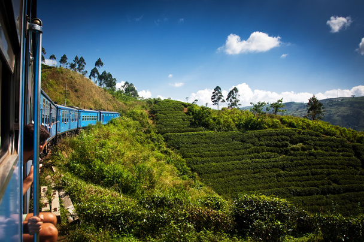

About Nuwara Eliya
Welcome to the Little England of Sri Lanka
Nuwara Eliya, often referred to as "Little England," is a captivating hill station located in the central highlands of Sri Lanka. Known for its cool climate, lush tea estates, and breathtaking landscapes, Nuwara Eliya is a must-visit destination for those seeking serenity and natural beauty.
A Place of Timeless Beauty
Surrounded by misty mountains and dotted with colonial-era architecture, Nuwara Eliya offers a unique blend of old-world charm and nature's splendor. Take a stroll through beautifully manicured gardens, visit serene waterfalls, or enjoy a round of golf at the famed Nuwara Eliya Golf Club.
Tea and Beyond
Nuwara Eliya is world-renowned for its tea plantations. Visit a tea factory to experience the art of tea production, from plucking the leaves to the final brew. Don’t forget to savor a warm cup of Ceylon tea amidst the cool mountain breeze!
Activities and Adventures
Whether you're exploring the iconic Horton Plains National Park, boating on Gregory Lake, or hiking up the famous World's End, Nuwara Eliya offers countless opportunities for adventure and relaxation. Each moment here is a memory waiting to be made.
Why Visit Nuwara Eliya?
If you’re looking to escape the hustle and bustle of everyday life, Nuwara Eliya is the perfect retreat. Its peaceful environment, stunning views, and rich cultural heritage make it a favorite destination for travelers from around the globe.